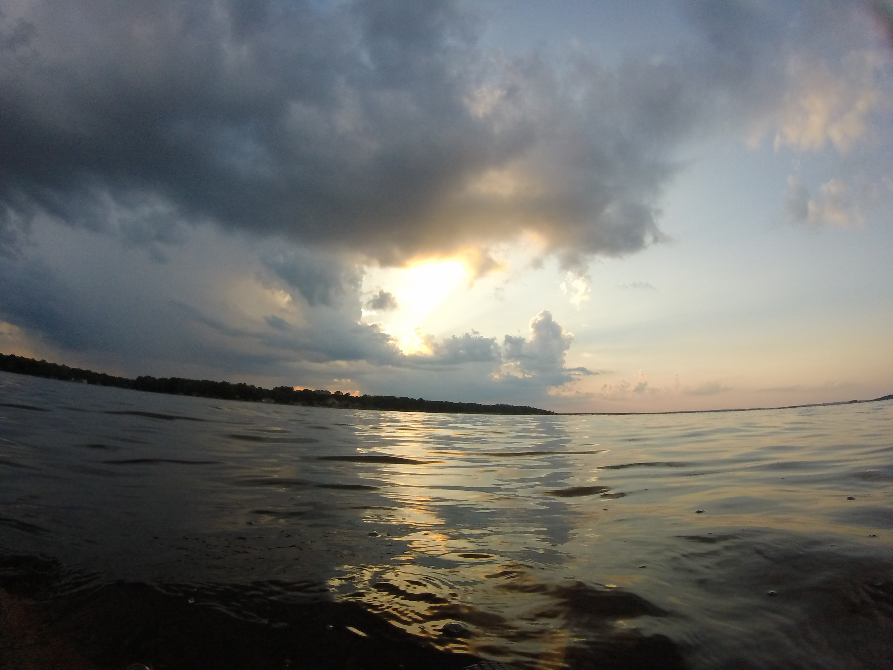
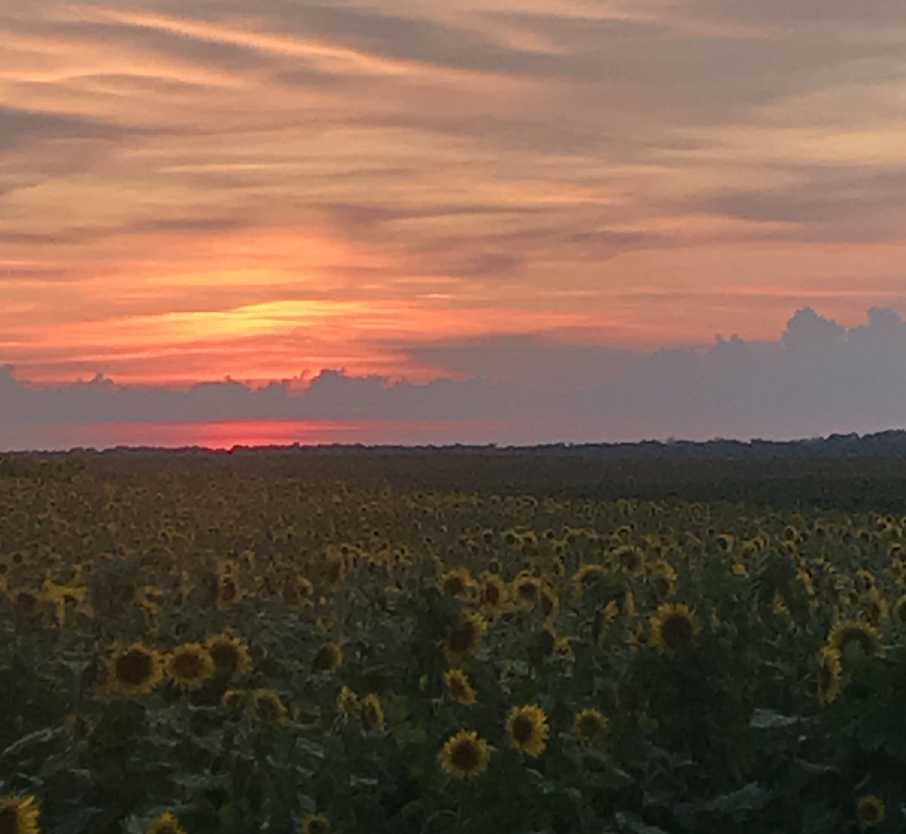
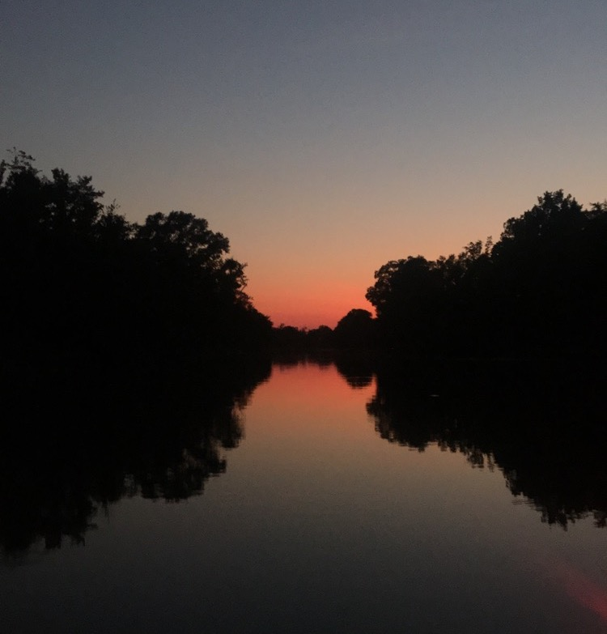
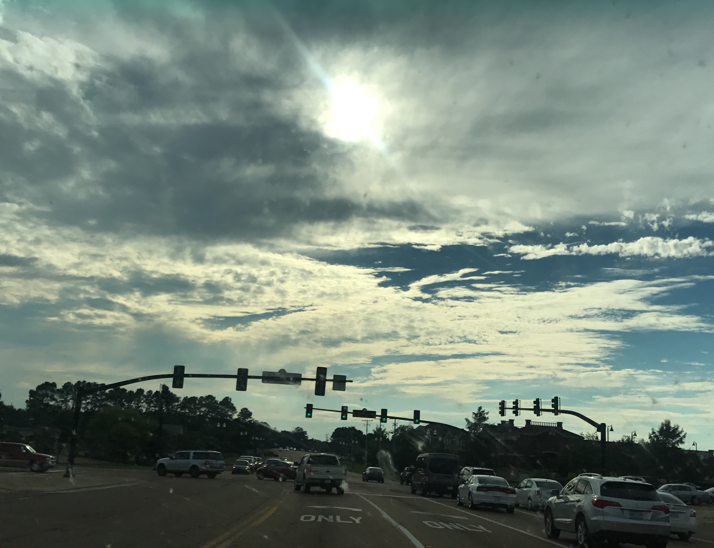
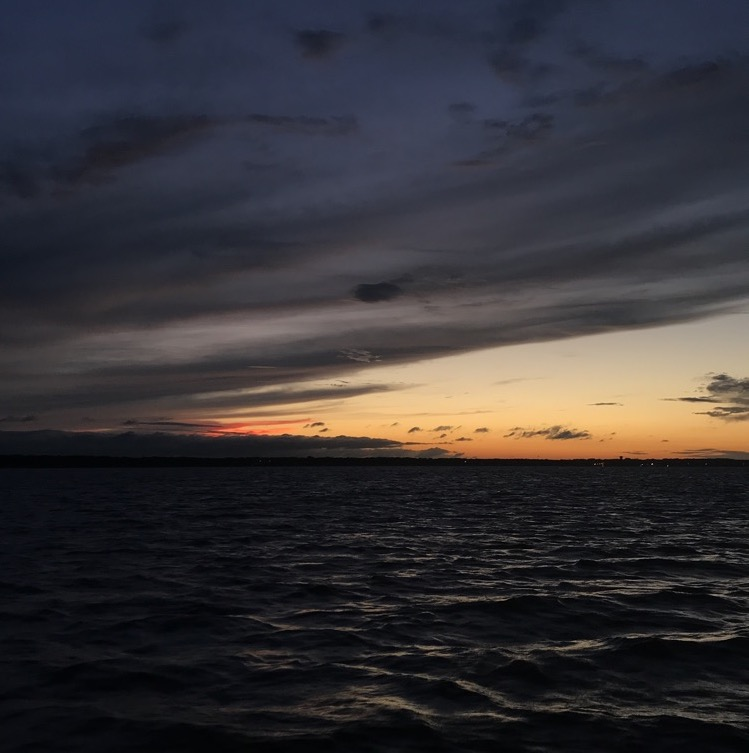

Sunset, also known as sundown, is the daily disappearance of the Sun below the horizon due to Earth's rotation. As viewed from the Equator, the equinox Sun sets exactly due west in both spring and fall. As viewed from the middle latitudes, the local summer Sun sets to the northwest for the Northern Hemisphere, but to the southwest for the Southern Hemisphere.
The time of sunset is defined in astronomy as the moment when the upper limb of the Sun disappears below the horizon. Near the horizon, atmospheric refraction causes sunlight rays to be distorted to such an extent that geometrically the solar disk is already about one diameter below the horizon when a sunset is observed.
Sunset is distinct from twilight, which is divided into three stages, the first being civil twilight, which begins once the Sun has disappeared below the horizon, and continues until it descends to 6 degrees below the horizon; the second phase is nautical twilight, between 6 and 12 degrees below the horizon; and the third is astronomical twilight, which is the period when the Sun is between 12 and 18 degrees below the horizon.[1] Dusk is at the very end of astronomical twilight, and is the darkest moment of twilight just before night.[2] Night occurs when the Sun reaches 18 degrees below the horizon and no longer illuminates the sky.
For more information: https://en.wikipedia.org/wiki/Sunset